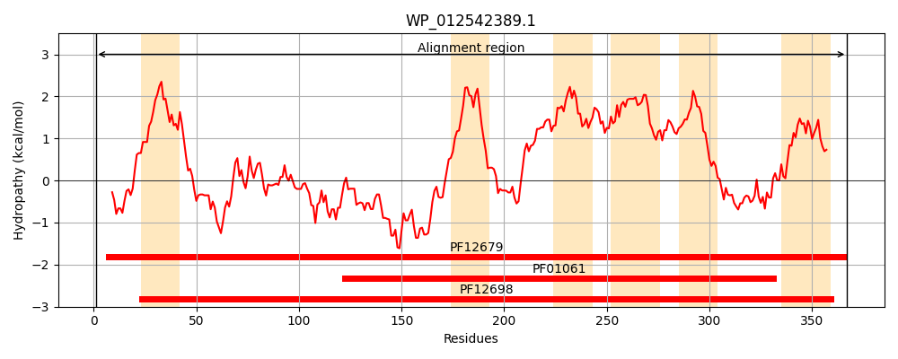
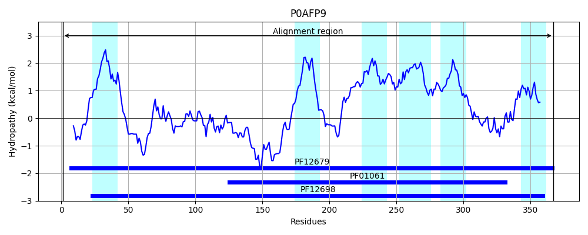
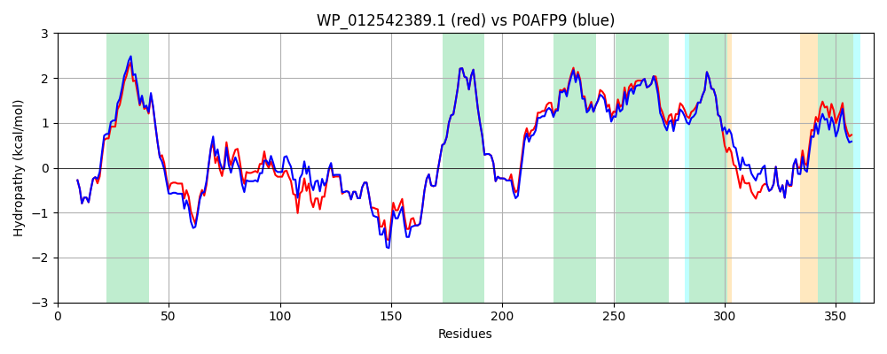

Hit Accession: P0AFP9
Hit TCID: 3.A.1.105.15
Hit Description: gnl|BL_ORD_ID|8834 gnl|TC-DB|P0AFP9|3.A.1.105.15 Inner membrane transport permease YbhR OS=Escherichia coli (strain K12) GN=ybhR PE=1 SV=1
Mach Len: 367
e:0.000000
Query TMS Count : 6
Hit TMS Count: 6
TMS-Overlap Score: 6.000000
Predicted Substrates:CHEBI:23888;drug
BLAST Alignment:
Score: 1743 , Bit scores: 676 bits, E-value: 0.0e+00, Alignment length: 367, Percentage identity: 93
Query: 1 MFHRLWTLIRKELQSLLREPQTRAILIMPVLIQVLLFPFAATLEVTNATIAIYNEDSGRHAVELTQRFARAKAFTHVLLLKSPQAIQPTIDEQKALLVVRFPADFSRNLDNYQTAPLQLLLDGRNSNSAQIAANYLQQIVKNYQQELLEGKAKPNNSELVVRNWYNPNLDYKWFVVPSLIAMITTIGVMIVTSLSVAREREQGTLDQLLVSPLATWQIFVGKAVPALIVATLQATIVLAIGIWAYQIPFAGSLLLFYFTMVIYGLSLVGFGLLISSLCATQQQAFIGVFVFMMPAILLSGYVSPVENMPQWLQDLTWINPIRHFTDITKQIYLKDASLKIVWGSLWPLLVIAATTGSAAYAMFRRKI 367
MFHRLWTLIRKELQSLLREPQTRAILI+PVLIQV+LFPFAATLEVTNATIAIY+ED+G H+VELTQRFARA AFTHVLLLKSPQ I+PTID QKALL+VRFPADFSR LD +QTAPLQL+LDGRNSNSAQIAANYLQQIVKNYQQELLEGK KPNNSELVVRNWYNPNLDYKWFVVPSLIAMITTIGVMIVTSLSVAREREQGTLDQLLVSPL TWQIF+GKAVPALIVAT QATIVLAIGIWAYQIPFAGSL LFYFTMVIYGLSLVGFGLLISSLC+TQQQAFIGVFVFMMPAILLSGYVSPVENMP WLQ+LTWINPIRHFTDITKQIYLKDASL IVW SLWPLLVI ATTGSAAYAMFRRK+
Sbjct: 1 MFHRLWTLIRKELQSLLREPQTRAILILPVLIQVILFPFAATLEVTNATIAIYDEDNGEHSVELTQRFARASAFTHVLLLKSPQEIRPTIDTQKALLLVRFPADFSRKLDTFQTAPLQLILDGRNSNSAQIAANYLQQIVKNYQQELLEGKPKPNNSELVVRNWYNPNLDYKWFVVPSLIAMITTIGVMIVTSLSVAREREQGTLDQLLVSPLTTWQIFIGKAVPALIVATFQATIVLAIGIWAYQIPFAGSLALFYFTMVIYGLSLVGFGLLISSLCSTQQQAFIGVFVFMMPAILLSGYVSPVENMPVWLQNLTWINPIRHFTDITKQIYLKDASLDIVWNSLWPLLVITATTGSAAYAMFRRKV 367 | Protein Hydropathy Plots: |
|---|
|  |  |
Pairwise Alignment-Hydropathy Plot:
|
|---|
|  |